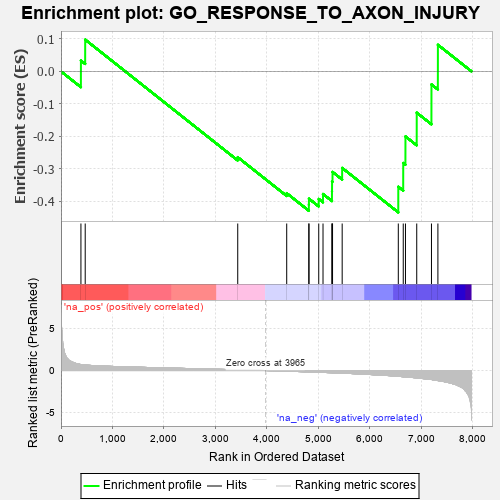
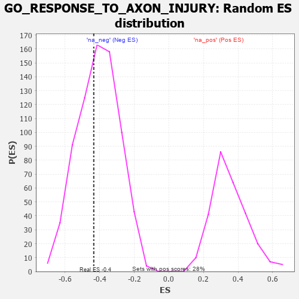

| | | Dataset | 7d |
| Phenotype | NoPhenotypeAvailable |
| Upregulated in class | na_neg |
| GeneSet | GO_RESPONSE_TO_AXON_INJURY |
| Enrichment Score (ES) | -0.4345276 |
| Normalized Enrichment Score (NES) | -1.0646183 |
| Nominal p-value | 0.40137932 |
| FDR q-value | 0.7935713 |
| FWER p-Value | 1.0 |
Table: GSEA Results Summary

Fig 1: Enrichment plot: GO_RESPONSE_TO_AXON_INJURY
Profile of the Running ES Score & Positions of GeneSet Members on the Rank Ordered List
| PROBE | GENE SYMBOL | GENE_TITLE | RANK IN GENE LIST | RANK METRIC SCORE | RUNNING ES | CORE ENRICHMENT | | 1 | BAX | | | 387 | 0.711 | 0.0333 | No |
| 2 | LRP1 | | | 470 | 0.648 | 0.0978 | No |
| 3 | SARM1 | | | 3432 | 0.086 | -0.2645 | No |
| 4 | ARF4 | | | 4383 | -0.073 | -0.3755 | No |
| 5 | P2RX4 | | | 4813 | -0.161 | -0.4108 | Yes |
| 6 | MORN4 | | | 4815 | -0.161 | -0.3924 | Yes |
| 7 | KLF4 | | | 5005 | -0.198 | -0.3932 | Yes |
| 8 | DRD2 | | | 5088 | -0.221 | -0.3780 | Yes |
| 9 | PTEN | | | 5262 | -0.261 | -0.3696 | Yes |
| 10 | CDK1 | | | 5264 | -0.262 | -0.3395 | Yes |
| 11 | EPHA4 | | | 5273 | -0.265 | -0.3100 | Yes |
| 12 | LRIG2 | | | 5460 | -0.310 | -0.2976 | Yes |
| 13 | STK24 | | | 6550 | -0.684 | -0.3556 | Yes |
| 14 | PTPRS | | | 6646 | -0.738 | -0.2824 | Yes |
| 15 | CERS2 | | | 6689 | -0.756 | -0.2004 | Yes |
| 16 | PTPRF | | | 6908 | -0.872 | -0.1273 | Yes |
| 17 | TSPO | | | 7194 | -1.065 | -0.0402 | Yes |
| 18 | GRN | | | 7319 | -1.194 | 0.0820 | Yes |
Table: GSEA details [plain text format]

Fig 2: GO_RESPONSE_TO_AXON_INJURY: Random ES distribution
Gene set null distribution of ES for GO_RESPONSE_TO_AXON_INJURY